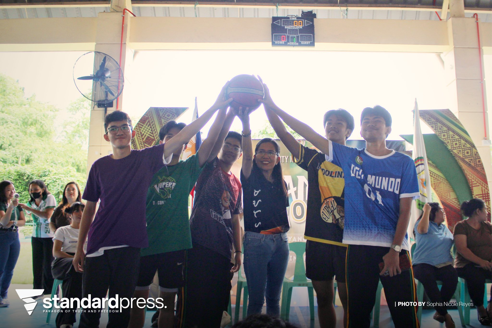
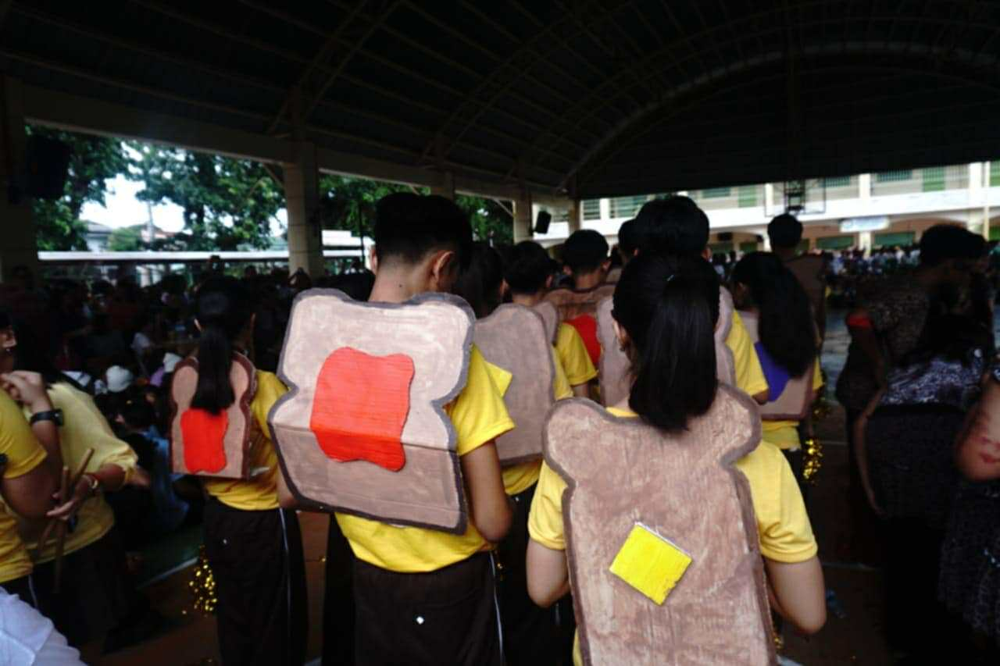
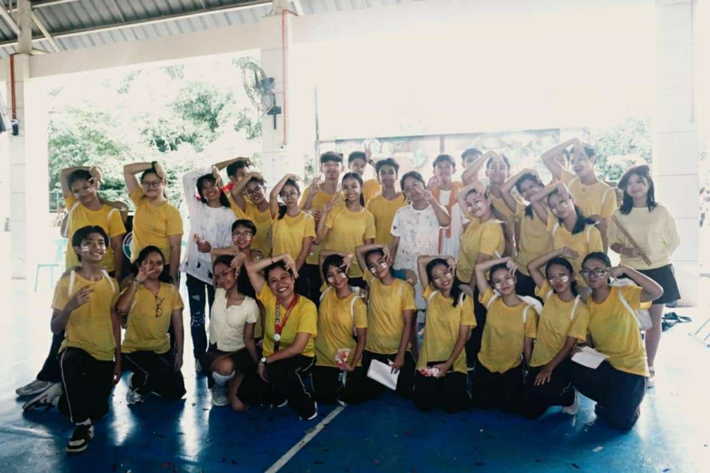
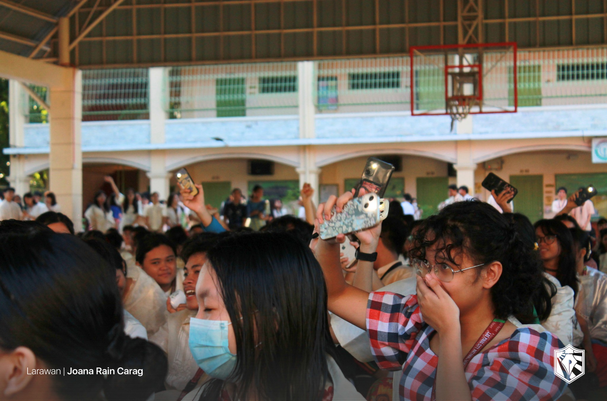
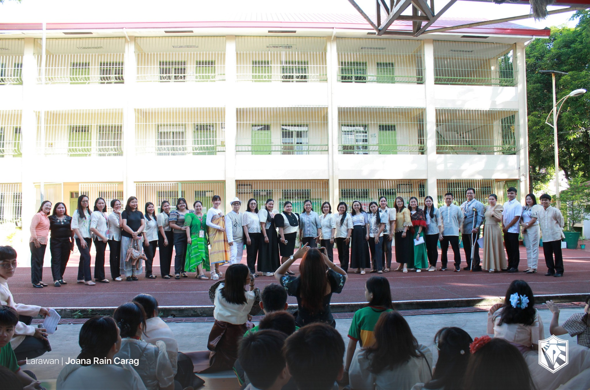
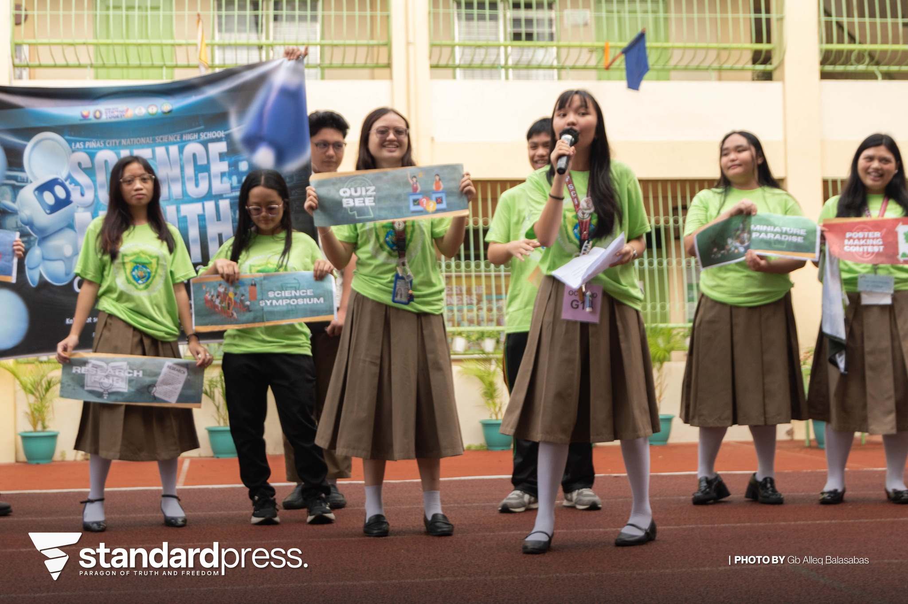
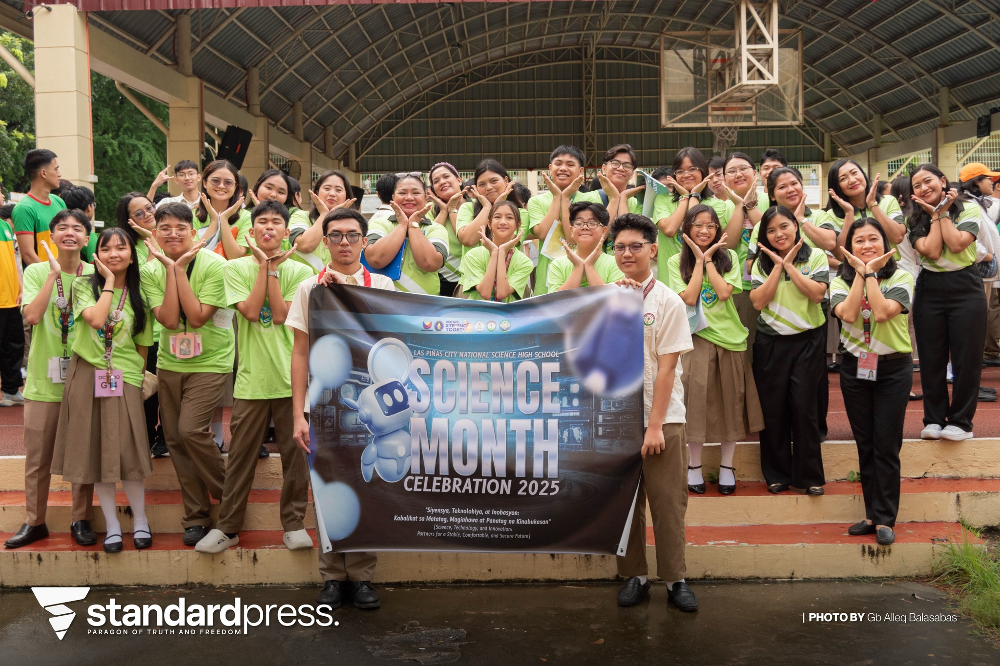
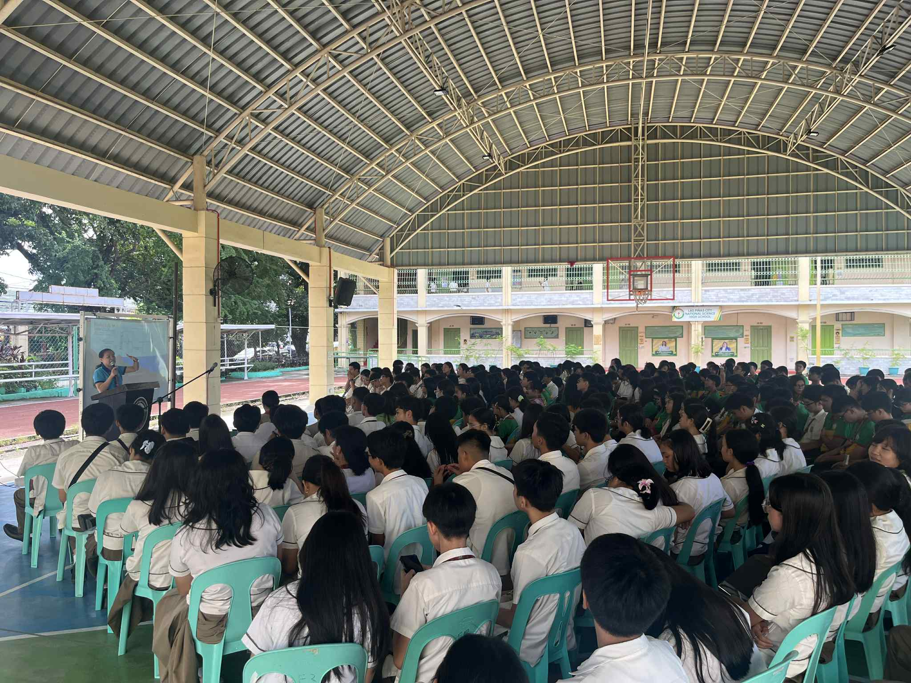
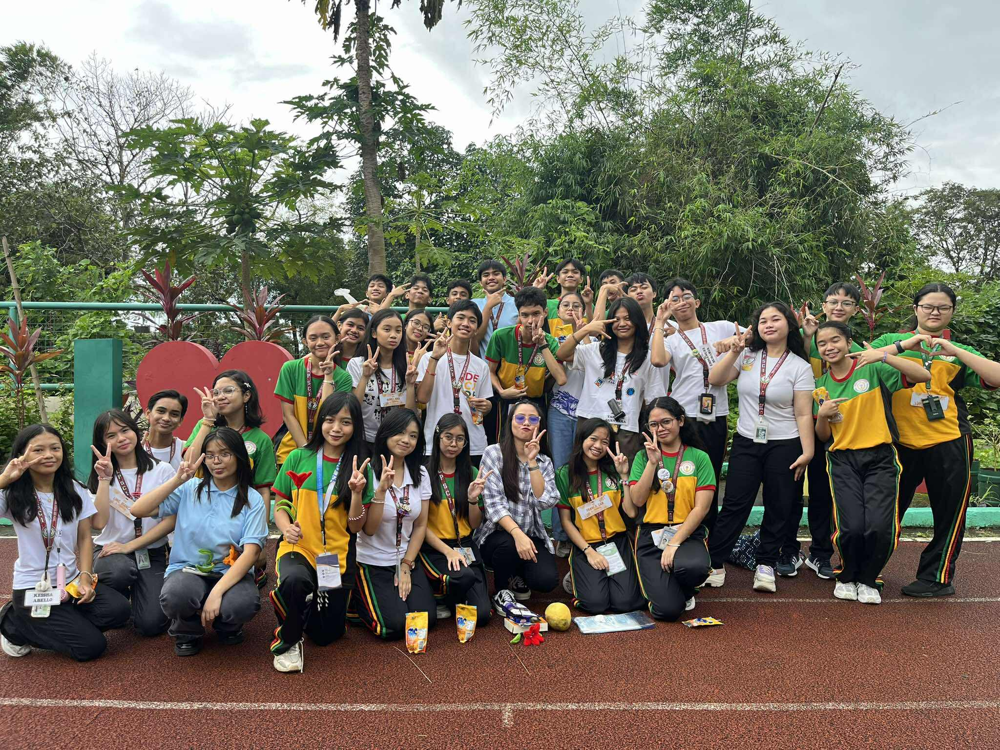
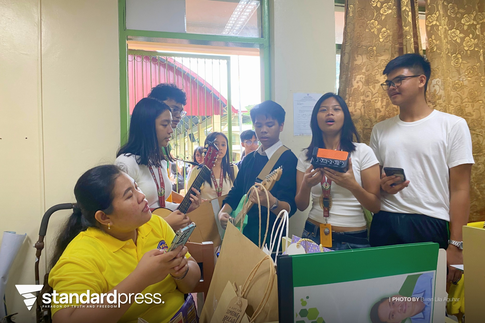

CREDITS: LPSci Standard Press (Sophia Nicole Reyes)

The most important thing I learned from this event was to value competition as a means to inspire you and encourage you to do your best. Participating in this month as props team and a dancer for my section, I was inspired by the energy within my batch and the other grade levels. If I would explain this event to another person, I would say that this event truly makes you feel grateful for the things you have, like clean food and water. I can apply my new knowledge by praying before my meals and always finishing what is on my plate. For me, this month was really important to have as the TLE subject isn't very acknowledged in terms of events and competitions, so it was nice to see everyone so excited for what this month had to offer.


CREDITS: Ms. Dureza D. Dancal
The most important thing I learned in this event was to cherish and love my country and its culture, including our language. I can apply these lessons in real-life by speaking Tagalog and respecting its history and the traditions that come with it. I participated in the event through the declamation activity for the grade 9 level, and also wore a Filipiniana outfit for every Monday in August. If I would teach this topic to a classmate of mine, I would first explain that this month is a way to express our identity and connect with our homeland through a shared language. It is important to hold these events to honor our ancestors and everyone that worked to liberate the Philippines from foreigners, and celebrate a culture that is uniquely ours.


CREDITS: Ang Paham (Shayne Marie Oray, Zoe Faustine Arde, Joana Rain Carag)
The most important thing I learned from this event was the power of sportsmanship and teamwork in playing sports. I can apply what I learned by listening to other's opinions and feelings, and accepting the outcomes, whether I win or lose. During intramurals, I participated by cheering for my team, the Yellow Padolinas, and also parading and chanting around the oval with fellow teammates. If I were to explain this to a classmate, I would say that Intrams aren't only for winning trophies, but for forming friendships that would've never been thought of before, and for promoting body conditioning and a healthy lifestyle. This event is important because not only does our health improve but we make important connections and memories too.

CREDITS: LPSci Standard Press (Sophia Nicole Reyes)
From this event, I learned that there is science and innovation in our everyday lives and when we put in effort to see it and use it, we can bring change to the world, no matter how big or small. I can apply this by being curious and asking questions about what I don't know. I actively participated in many activities during this month, including the elimination for the quiz bee, the poster making contest, and helping keep our classroom clean for the Cleanest Classroom contest. If I were to explain this event to a classmate, I would say that Science Month encourages us to explore, discover and apply scientific concepts that we usually wouldn't have. Having this event is important because it inspires students to pursue knowledge, think critically, and value the role of science in society.


CREDITS: LPSci Standard Press (Gb Alleq Balasbas)
The most important lesson I got from this month was to open my eyes to our country’s conditions and problems, as well as understand the importance of our history in shaping our identity and culture. I can apply what I learned by educating myself on the political, economical, and social state of the Philippines, while respecting other countries at the same time. I participated in this month’s events through attending a symposium about the West Philippine Sea, making an editorial cartoon about the SDGs and showing off our section’s cultural costumes and flags representing Australia and Oceania countries. If I were to explain this to a classmate, I would say that AP Month deepens our knowledge of the Philippines and the world, helping us appreciate our role in building our nation. Events like this are crucial because they promote critical thinking and forming our own opinions on important issues.


CREDITS: LPSci AP Club
From this day, I learned that while we students struggle at times, we should also acknowledge the exhaustion that our teachers go through to give these lessons and activities to us. I can apply this lesson by always showing respect and cooperation with my teachers at school, and always keeping in mind that they are humans as well. I actively participated in the programs my class had for this day, also greeting and thanking the teachers I saw for their efforts. If I was explaining this day to a classmate, I would say that Teacher's Day is a way we can repay our educators for all the knowledge they've given to us. Overall, Teacher's Day is important because it is a way for teachers and students to connect outside of the classroom and make memories to remember.


CREDITS: LPSci Standard Press (Bwan Lila Aguhar), Riley Dablo